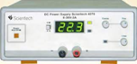
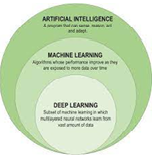
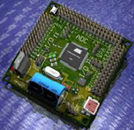

DC regulated power supply

specifications:
- DC Output : 0 - 30 V continuously variable
- Current limit : 0-3 A
- Setting Resolution : Voltage 100 mV Current 10 mA
- Stability : 2.5 mV at 30 V / 3 A
- Recovering Time : £ 50 s
- Load Regulation : (0.05 %+10 mV)
- Line Regulation : (0.05%+10 mV)
- Temperature Coefficient : ± (0.05 % + 5 mV / °C)
- Ripple and Noise : 1 mVrms
- Current Limit : Adjustable between 100 mA to 3 A
- Display : 3 digit seven segment LED display
- voltage and current Accuracy : 1% + 1 digit)
- Range Indication : By flashing 'OR' LED
Interacting software's for learning

specifications
- Assist a learner to strengthen knowledge and develop a deep understanding of these
technologies. Its graphical approach will help learners to grasp these topics in a
very short period of time.
- Comes with a huge set of free libraries for machine learning, data science, etc.
Assist to develop the skills for Deep Learning.
- Big Data for Machine Learning
- Data Mining and Statistics, Artificial Intelligence, Deep learning Relation Between
Artificial Intelligence, Deep Learning, Machine Learning.
- Assist to develop the skills for Machine Learning, Introduction Supervised,
Semi-Supervised Unsupervised, Reinforcement
Basic simulation software for robotics

specifications:
- Robotics and Robots: Introduction to Robotics, Types of Robots
- Robot Mechanical Design: Joints and Links, Degree of Freedom, Forward and Inverse
Kinematics
- Electronics Components: Basic Concepts, Basic Components, Breadboard, Types of
Battery, Types of Switches, Power Sources, Regulator’s IC, Operational Amplifier,
555 Timer, Motor Driver’s IC, Logic Gates IC, ADC
- Sensor: Introduction to Sensor, Light Detecting Sensor, Temperature Sensor, Gas
Sensor, Ultrasonic Sensor, Motion Sensor
- Brain of Robot: 8051 Microcontroller, AVR Microcontroller, PIC Microcontroller,
Arduino
- Actuators: DC Motor, Stepper Motor, Servo Motor
- Display Devices: LED, Seven Segments, LCD
- Measuring Instruments: Multimeter, Oscilloscope
- Application of Robots: Industrial Application, Non-Industrial Application
Microcontroller used for robotics

specifications:
- Core 8051 MCU clocked at 11.0592 MHz.
- User can enter opcode using on board 20 keys Hex keypad
- For large program user can use on board PC based USB Programmer.
- On board LCD for both programming mode and run mode.
- Every pin is marked in order to make work easier
- User can write assembly codes in PC software and run on trainer
- Line Regulation : (0.05%+10 mV)
- PC Programmer mode also supports other devices like AT89C51/52/55, AT89S51/52/53,
AT89S8252, Input / Output & test points provided on board
- Self-contained development board with onboard DC Power Supply plug-in modules and
prototyping area Onboard breadboard for self-circuit design
- CD with sample project code in assembly and C, Programmer software & useful
documents Stepper Motor interface DC Motor interface servo Motor interface
- Expansion connectors for plug in with Microcontroller unit and prototyping area
Every pin is marked in order to make learning easier Input/Output & test points
provided on board
Educational robot with moving arm
specifications:
- Learn to interface RC servo motor with ATmega128 microcontroller
- Learn the concept of RF communication
- Learn to interface LCD with ATmega128 microcontroller Learn to interface DC motor
with ATmega128 microcontroller
- Learn the concept of Pick and Place Robot
- Learn to interface colour sensor and study applications like colour detection and
sorting
- Gaining knowledge about Robotics and ATmega128 microcontroller
- Wi-Fi Module Interface
3D printer
specifications:
- DC Output : 0 - 30 V continuously variable
- Current limit : 0-3 A
- Setting Resolution : Voltage 100 mV Current 10 mA
- Stability : 2.5 mV at 30 V / 3 A
- Recovering Time : £ 50 s
- Load Regulation : (0.05 %+10 mV)
- Line Regulation : (0.05%+10 mV)
- Temperature Coefficient : ± (0.05 % + 5 mV / °C)
- Ripple and Noise : 1 mVrms
- Current Limit : Adjustable between 100 mA to 3 A
- Display : 3 digit seven segment LED display
- voltage and current Accuracy : 1% + 1 digit)
- Range Indication : By flashing 'OR' LED
Raspberry PI 4
specifications:
- Raspberry Pi 4 Model B 2GB Ram Board.
- Official Raspberry Pi 4 Case.
- Raspberry Pi 4 USB-C Official Power Adapter - 5.1V - 3 Amp.
- Micro HDMI Male to HDMI Female Adaptor for Raspberry Pi 4.
- HDMI male to HDMI male cable - 1.5m.
Raspberry base kit
specifications:
- Grove Base Hat for Raspberry Pi
- Grove - Red LED Button
- Grove - Buzzer
- Grove - Moisture Sensor
- Grove - Temperature & Humidity
- Sensor (DHT11)
- Grove - Light Sensor
- Grove - mini PIR motion sensor
- Grove - Ultrasonic Ranger
- Grove - Relay
- Display : 3 digit seven segment LED display
- Grove – Servo
- Grove - 16 x 2 LCD (White on Blue)
Sun robotics Raspberry PI
specifications:
- Package includes: 48 Different types of Components related to Raspberry pi and
Arduino Practical’s.
- Brand New & High Quality.
- Great quality and packing in a plastic box.
- Includes Sensors, Motors, LCD, Power Supply Module, Components
Oscilloscope
specifications:
- Bandwidth : 50 MHz,
- Real time Sample Rate: 1GSa/s (Single Channel),
- Number of Channels 2 CH,
- Memory Depth: 1Mpts,
- Acquisition Modes: Normal/Average/Peak Detect,
- Average Selectable from 4 to 256,
- Vertical Sensitivity: 500 μV/div to 10 V/div,
- Vertical Resolution: 8 bits,
- Rise Time: < 5ns,
- Input Impedance: 1 MΩ II 13 Pf,
- Input Coupling: DC,
- AC and GND, Maximum Input Voltage: ±150Vrms,)
- Time base Range: 5ns - 50s/div,
- Time Base Accuracy: ± 50ppm measured over 10ms interval
- Trigger Sources: CH1, CH2, Ext, AC Line,
- Trigger Modes: Auto, Normal, Single,
- Trigger Type: Edge, Pulse Width, Slope, Video, Alternate,
- Trigger Coupling: AC, DC, Auto Measure 30 Automatic Measurement, VPP, VMAX, VMIN,
Vamp, VTOP, VBASE, VAVG, Mean, CRMS, VRMS, ROVSHOOT, FPRE Shoot, Rise, time, Fall
time, Freq, Period, + WID, -WID, +DUT, - DUT, BWID, Phase, FRR, FRF, FFT, LRR, LRF,
LFR, LFF, Cursor Measure Manual, Track and Auto measure mode, Math’s +, – , ×, /,
FFT, Digital Filter: Low Pass,
- Waveform update rate: 200000 w f/s,
- Storage: Linear
- Internal : 2 Group reference waveforms, 20 waveforms and 20 Setups
- USB : BMP, CSV, Waveforms, Setups Communication Port USB Host, USB Device, LAN
- Sample Types: Real Time and Equivalent Time,
- FFT: Window: Henning, Hamming, Blackman, angular, Measure Display Modes Main,
Window, Window Zoom, Scan, X-Y Probe Attenuator 1X, 10X
- Display: 7 inch TFT Color LCD Display,
- Power: 100 - 240V AC, 50VA Max, Accessories 1:1/10:1 Probe (2 PCS), Power Cord, USB
Cable, Bench View Software
Oscilloscope
specifications:
- 10MHzFrequency Range (Sine Wave): 1MHz to 3MHz Frequency Range (Square, Triangle,
Ramp, Pulse , & TTL),
- Frequency Resolution :1MHz,
- Frequency Display Accuracy:+0.2%
- Sine Wave Distortion : < 0.3%,
- Rise/Fall Time < 20ns
- Jitter: 5nS (Square) & 10 nS(Ramp and Pulse) Triangle
- Line Regulation : (0.05%+10 mV)
- Non-Linearity: < 1% (typical),
- Pulse Duty Cycle (5% to 95%) Digitally Controlled Output :20Vpp O.C. 10Vp pint o 50
Ω Output Impedance 50Ω
- Amplitude Readout Attenuation: 20dB/40dB Fixed 20dB Variable (60dB Max.)
- Level Flatness:0.5dB (3MHz)DC Offset: + 5V adjustable,
- Internal Modulation: FM (with Variable deviation frequency),
- Frequency Counter 50MHz (External) Sensitivity: 0.5 V RMS
- Input Impedance: 1MΩMax.
- Input Voltage : 200 V (DC + AC Peak),
- Main Supply : 230V AC + 10%, 50Hz,
- Power Consumption : 20VA (Approximately),
- Operating Condition: 0-40°C, 85% RH
Digital trainer board
specifications:
- Size of Breadboard :172.5 mm x 128.5mm,
- Tie Points on Breadboard:1685 NOS (Solder less),
- DC Power Supply on board : 5 V, Size of Breadboard :172.5 mm x 128.5mm,Tie Points on
Breadboard:1685 NOS (Solder less), DC Power Supply on board : 5 V, l A (Fixed),15 V
1A (Fixed) 15 V 1A (Fixed),15 V 200 m A (variable)-15 V 200 m A (variable),AC Supply
5V-0V-5V, 10V-0V-10V,can be used as 5V, 10V, 15V, 20V AC & also as center tap,
- Sine/Square/TTL Generator: 10 Hz to 1 MHz in 4 steps arable in between the steps,
- Amplitude Sine wave- 0 to 15 Vpp,
- Square Wave- 0 to 10Vpp TTL-5V (fixed),Fixed TTL (Clock) 01. Hz ,
- Line Regulation : (0.05%+10 mV)
- Data switches : 8 NOS (Toggle switches) PULSAR Switches 1 no,
- LED display : 8 NOS,
- Logic Probe : Logic level indicator H/L for TTL level (7 Segment display),
- Potentiometers n:6 NOS (100 ohm to 47k Ohm),
- Speaker :8ohm/2W for audio use,
- Power Supply :110-220V + 10%, 50/60Hz,
- Power Consumption:8VA,
- Included Accessories :Breadboard:2 nos.
- Connecting Wire : 20 nos,2mm to 1mm
- Patch cord: 8 nos, 2mm to 2mm
- Patch cord 16: 8 nos
- Mains cord : 1 no.
Digital trainer board
specifications:
- Diode Test : Yes, Function Protection :Yes, Transistor Test: Yes, Input Impedance:
10MΩ,
- Continuity Buzzer: Lower 30Ω + 10Ω,Sampling Rate: 3 times per second,
- Low Battery Display: Lower 2.4V,
- AC Frequency Response: 40-400Hz,
- Auto Power OFF: Approx. 30min,
- Power: F3V AAA,DC Voltage 0.1mV ~ 1000V,AC Voltage 0.1mV ~ 750V,DC Current 0.1uA
~20A,AC Current 0.01uA ~ 20A,Resistance 0.1Ω ~ 40MΩ
- Capacitance 10pF ~ 200uF,Frequency 0.1Hz ~ 30MHz,Celsius -40°C ~ 1000°C
- H HFE (NPN or PNP) 0 ~ 1000, Included Accessories : Test Leads, Holster TP01
Temperature Probe Bead type.
Analog circuit development platform
specifications:
- Aesthetically designed injection molded electronic desk.
- Master unit carrying useful experiment resources Variable Power supplies / Status /
Pulsar / Function Generator, DPMs etc. while the central slot will hold various
replaceable experiment panels.
- Connection through Sturdy 4mm Banana Sockets & Patch Cords.
- Hands on learning by constructing circuits using built in power breadboard panels as
well as using Discrete component panels.
- Set of Users Guide provided with each Unit.
- If you need components for circuit practice buy an overlay learning system specified
below.
- Built in Power Supply
- DC. Power Supply : 5V / 1A, ± 15V, 150mA [variable], Variable : 0 - + / -12V 150mA,
AC 12 - 0 - 12, 150mA AC
- Built in Function Generator
- Output Waveform - Sine, Triangle & Square / TTL
Output Frequency - 1 Hz to 200KHz in 6 ranges, with amplitude & frequency control
pots. O/P Voltage 20V p-p max.
- Clock Generator : 10 MHz TTL clock.
- Input Data Switches & output LED status indicators for
High/Low indication (15+1) No.,)
- Pulsar switches (2 nos.) With four debounced outputs..2no.
- Fixed TTL (5V) clocks : 4 Nos. 1KHz, 100Hz, 5Hz, 1Hz
- Logic probe to detect High/Low level pulses upto 1MHz, with bi-colour LEDs to
indicate status.
- 2 digit 7 segment display with BCD to 7 segment decoder.
- LED BAR graph with 10 LED indicators to display 0-2.5V or 0-4V input.
- Onboard DPM is provided with mode selection.
- DC volt / current - 200mA/20V....... 1no.
Onboard speaker - 8 Ohms, 0.5 Watt (1no.)
- Onboard POTS. .1K(1no.) & 1M(1no.)
- Built in bread board panel with 1280 tie points & 400 distribution points totalling
to 1680 points along with 4mm banana sockets for tapping from the trainer +5V, +12V,
GND for the circuits to be assembled on breadboard using single stand (#22/24)wire.
- Components for circuit practice (resistors, capacitors, diodes, ICs etc.) supplied
as an overlay learning system.
- 20 Pin ZIF : Various analog/digital IC's can be tested.
- Operating Voltage : 230V ±10%, 50Hz/35AOperating Voltage : 230V ±10%, 50Hz/35A